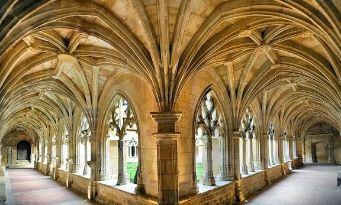

Abbaye de
Cadouin


⟹ Cloître Gothique & Chemins de Compostelle ⟸
Nichée dans un vallon au cœur de la forêt de la Bessède, l'abbaye cistercienne de Cadouin voit le jour au début du XIIe siècle. Depuis plus de 900 ans, la vie du village s'organise autour de son église abbatiale et de son cloître, témoins de l'art des bâtisseurs médiévaux.

Entre 1201 et 1214, l'abbaye entre en possession d'un « Saint Suaire », rapporté de Terre Sainte par le comte de Toulouse Raymond VII. Cette relique fait très vite de Cadouin un lieu de pèlerinage majeur sur les chemins de Saint-Jacques-de-Compostelle, attirant chaque été des dizaines de milliers de fidèles et assurant à l'abbaye rayonnement et prospérité aux XIIe et XIIIe siècles.
L'abbaye traverse ensuite des siècles mouvementés : partiellement détruite pendant la guerre de Cent Ans, elle voit sa relique envoyée à Toulouse pour être mise à l'abri, ce qui interrompt le pèlerinage. Le roi Louis XI, après un long procès, restitue le suaire aux Caduniens et finance la reconstruction de l'abbaye, notamment son célèbre cloître gothique flamboyant, édifié entre 1490 et 1512.
La Révolution française met fin à la vie monastique en 1790 ; le cloître, devenu bien national, est vendu aux enchères l'année suivante. En 1934, un historien jésuite démontre que le linge vénéré depuis sept siècles n'était en réalité qu'un tissu fatimide originaire d'Égypte, mettant un terme définitif au pèlerinage. L'abbaye de Cadouin est inscrite en 1998 au patrimoine mondial de l'UNESCO au titre des Chemins de Saint-Jacques-de-Compostelle.
L'église abbatiale romane, grande construction à trois nefs du XIIe siècle, dégage toute la sobriété propre à l'architecture cistercienne. Le transept est surmonté d'une coupole ornée de fresques, tandis que certains chapiteaux présentent des motifs sculptés d'une richesse rare dans l'art cistercien, habituellement très dépouillé.
Le cloître, chef-d'œuvre d'art gothique flamboyant financé par Louis XI et reconstruit entre 1490 et 1512, tranche avec la sévérité de l'église. Ses galeries ajourées, ses clés de voûte sculptées représentant les évangélistes et ses portes Renaissance et romane juxtaposées témoignent des différentes époques de construction de l'ensemble monastique.
Le village de Cadouin : blotti autour de son abbaye au cœur de la forêt de la Bessède, entre Sarlat-la-Canéda et Bergerac, il a conservé son caractère médiéval et sa halle historique.
Le château de Biron : à une trentaine de minutes de voiture, un billet combiné permet de découvrir ce grand château du Périgord après la visite du cloître.
Les Chemins de Saint-Jacques-de-Compostelle : Cadouin constitue une étape emblématique du pèlerinage, à l'image de la cathédrale Saint-Front de Périgueux ou de l'abbaye de Saint-Amand-de-Coly, autres joyaux religieux de la Dordogne.
L'église abbatiale se visite librement toute l'année. Le cloître, récemment rénové, est également ouvert à la visite toute l'année et accueille environ 31 000 visiteurs par an.
Le musée du Suaire, situé dans la salle capitulaire, présente un fac-similé de la relique ; l'original, exceptionnel tissu fatimide, est en restauration à Périgueux.
Accès : le cloître de Cadouin se trouve au Buisson-de-Cadouin, aux confins du Périgord pourpre et du Périgord noir, sur l'une des branches du chemin de Saint-Jacques-de-Compostelle.